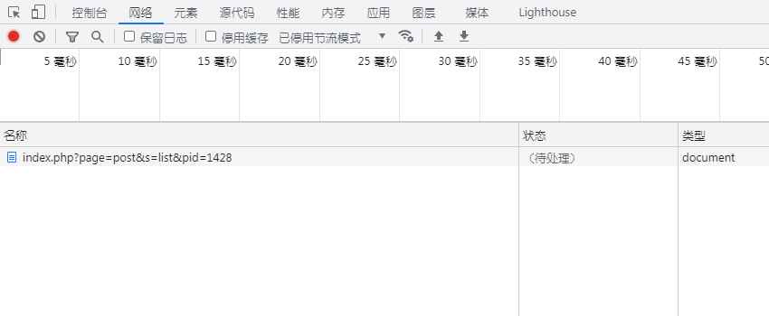
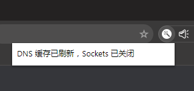

Chrome 假死现象

这就是多数优化文章中都没有提到的 Chrome "假死" 现象。有兴趣的读者可以看看这位博主的文章:
"假死" 问题的本质是 Chrome 分配给该域名的 socket 连接池被旧的活动连接占满，该 Chrome 窗口下对同一域名的新请求都会被堵塞（状态: 待处理）。注意，这个问题不能简单地用 "网卡" 来描述哦，它本质上是 Chrome 窗口的优先级错乱。常规的强制刷新、清空缓存等操作都不能有效解决问题。
后来咱就干脆换上 Chrome 的无痕窗口（无痕窗口拥有独立于正常窗口的连接池）。重开 "假死" 的无痕窗口便可以轻松解决问题（socket 资源重置）。
嘿嘿，就是这个:
这是咱目前使用的魔改版本:

他主要是在窗口右上角的扩展栏里添加了一个可以很方便地刷新 socket 连接池的按钮。使用该插件前需要给浏览器加上 --enable-net-benchmarking 的启动参数哦。